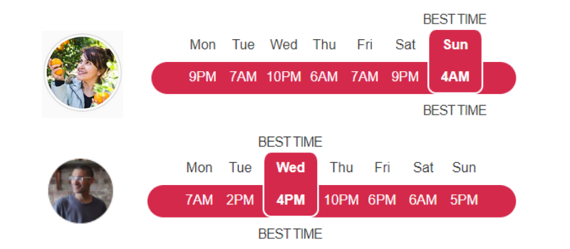

    
		<div class="blog">

			<div id="Post">
				<div class="pg-special-article__body" itemprop="articleBody">
					<h1 class="pg-headline">What Is The Best Time To Post On Instagram?</h1>

					<section>
						<div class="l-container">
							<p class="zn-body__paragraph speakable">Why did I start making this website in the first place? Well, I
								was tired of reading the same old generic posts giving the same old generic advice. Take this one for
								instance:</p>
							<blockquote>
								<p class="zn-body__paragraph speakable">"To find the best time for Instagram posts so that you get
									maximum engagement in 2019, we’ve done analysis on 12 million posts, across multiple time zones, from
									users with between 100 to 1 million+ followers"</p>
							</blockquote>
							<p class="zn-body__paragraph speakable">That’s great if your post is one, or more, of those 12 million;
								but the chances of that are slim.</p>
							<h3>Why Does This Approach Not Work?</h3>
							<p class="zn-body__paragraph speakable">The flaw with this approach is that it is far too generic. Chances
								are that you have a particular niche within which you operate; for example, that could be as food,
								travel or sports blogger</p>

							<a href="https://d4c564x-v6xucq3f2iof-86yuw.hop.clickbank.net/?tid=AFFCLICK">
								
							</a>
							<p class="zn-body__paragraph speakable">This means that you need specific data based on your niche, not
								some generic statistics, the vast majority of which are irrelevant to your field. This type of feedback
								can only come from someone who is both involved in your niche, and someone successful in your niche.</p>
							<p class="zn-body__paragraph speakable">My assumption was this. It would be a better idea to analyze one
								particular user or business on Instagram. What sort of quality of data might this approach produce? It
								was whilst asking myself questions such as this one that sparked the idea for this website.</p>
							<p class="zn-body__paragraph speakable">I would like to prove to you that it is highly unlikely that you
								can take 12 million posts and use them as data for calculating the best time for all users to make their
								posts. A much more focused method would be to look at a single user or business that closely resembles
								your own and try to duplicate their success rates.</p>
							<p class="zn-body__paragraph speakable">For example, look at 50 food bloggers from 5 continents and see if
								you can determine the best time for someone to make a post about food.</p>

							
							<span>two food bloggers one from Australia and one from Europe.</span>
							<p class="zn-body__paragraph speakable">The image above shows us data from two food bloggers; one from
								Australia and one from Europe. They may be involved in the same niche, but the times of their posts are
								completely different. Why?</p>
							<p class="zn-body__paragraph speakable">Because you need to take into consideration other factors such as
								geographical location (and therefore time-zones), audience demographics, and other factors that will
								impact when people make a post.</p>
							<p class="zn-body__paragraph speakable">The solution is to be specific. Read on and I’ll show you how.</p>
							<p class="zn-body__paragraph speakable">Let’s assume that you are an aspiring new food blogger based in
								Australia and you have all your production tools ready to go. You can be producing great content, but
								you have no idea when the best time to post that content to Instagram is.</p>
							<p class="zn-body__paragraph speakable">Your first step to remedying this is to search for an established
								blogger in the same niche and location. Someone successful will have done the experimentation and
								already know when the best time to post is. You want to be aware of what the competition is up to,
								right? But this system could be time-consuming and you may not get it right the first few times, if at
								all.</p>
							<p class="zn-body__paragraph speakable">So, what about a different approach? What about something that
								helps you identify this best time? What about something that will offer you a much better chance of
								success?</p>
							<p class="zn-body__paragraph speakable">This application can provide these. It will help you calculate the
								best time to post, increase your chances of being heard and increase your levels of engagement.</p>
							<!-- square -->
							<a href="https://d4c564x-v6xucq3f2iof-86yuw.hop.clickbank.net/?tid=AFFCLICK">
								
							</a>
							<h3>How Does It Work?</h3>
							<p class="zn-body__paragraph speakable">Well, simply speaking, the more relevant the information you want,
								the more specific you need to be in your search. The level of complexity stays simple, but it just
								focuses in on real specifics.</p>
							<p class="zn-body__paragraph speakable">So, rather than searching all posts on all niches in all
								locations, you are going to focus on each. What is the niche, sub-niche, etc? Where is the location;
								continent, country, location, even district depending on your niche? What about comments? This is what
								we’re talking about by getting specific.</p>
							<p class="zn-body__paragraph speakable">Instead of searching thousands of Instagram profiles for
								irrelevant information, you only need to search one with a focused search and the information you get
								back will be of incredible benefit.</p>
							<p class="zn-body__paragraph speakable">Just select the business or user that you want to replicate - make
								it a good one; the best. There’s no point in aiming low; you want success, right, so do what the
								successful do.</p>
							<h3>How to use this website application?</h3>
							<p class="zn-body__paragraph speakable">The application is really simple to use; there are only three
								steps:</p>
							<ol>
								<li>Enter the name of the Instagram account you want the data from.</li>
								<li>Search.</li>
								<li>Retrieve the data.</li>
							</ol>
							<h3>What Information Will You Get?</h3>

							<p class="zn-body__paragraph speakable">The website displays the following information:</p>
							<ul>
								<li>Best Posting Time.</li>
								<li>Hashtags.</li>
								<li>Post Engagement.</li>
							</ul>
							

							<h3>Best Posting Time</h3>
							<p class="zn-body__paragraph speakable">The image above shows the information you will see regarding posts
								by month, day and hour. Your best posting time could be based on the day that had the most posts, or a
								particular time of day. You can use this information to predict patterns for the best posting times. The
								basic formula that is used to calculate the best posting times is:</p>
							<blockquote>Number of Comments (*100) + Number of Likes</blockquote>
							<p class="zn-body__paragraph speakable">This is a really powerful tool and increases in value the longer
								you use it as you can start to see patterns develop. Start experimenting with your posting times and
								gauge this against those of your competitors.</p>
							<h3>Hashtags</h3>
							<p class="zn-body__paragraph speakable">You will also be shown what hashtags your competitors are using to
								get their best results. It will display a percentage of how often a hashtag gets used in comparison to
								others.</p>
							<p class="zn-body__paragraph speakable">Getting ‘no data’ returned for hashtags may mean that the user
								account is putting their hashtags in the ‘Comments’ section. This is a good habit to get into as it does
								not take up valuable character spaces.</p>
							<h3>Post Engagement</h3>
							<p class="zn-body__paragraph speakable">This shows every post for a particular day. The post’s ranking is
								based on the level of engagement it receives. So, this will give you a good idea of the type of content
								that is currently popular.</p>
							<p class="zn-body__paragraph speakable">Finally, on the right-hand side, there is a ‘Download’ button.
								This allows you to download the image so you can refer to it later.</p>
							<h3>So, what are you waiting for?</h3>
							<p class="zn-body__paragraph speakable">Start posting your Instagram content at THE BEST TIME.</p>
							<p class="zn-body__paragraph speakable">Just type the name of your competitors and find out when ‘the
								Best’ are posting their best. You’ll be amazed at the transformation it brings to your posts!</p>
							<p class="zn-body__paragraph speakable">Thank you for reading.</p>
							<p class="zn-body__paragraph speakable">Please share this article with your family, friends, and
								colleagues</p>
						</div>
					</section>

				</div>
				<div id="Time">
					<div id="posted_on">
						<span>October 2, 2019</span>
					</div>
				</div> <!-- end #Time -->
			</div>
		</div> <!-- end #blog -->
